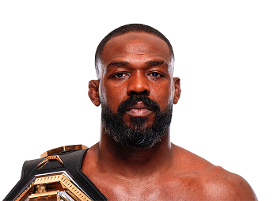

Jon Jones, conocido como “Bones”, es considerado por muchos fanáticos y expertos como uno de los mejores peleadores en la historia de las artes marciales mixtas. Nació el 19 de julio de 1987 en Rochester, Nueva York, Estados Unidos. Desde joven mostró un gran talento para el deporte, destacándose especialmente en la lucha libre durante su etapa escolar y universitaria. Su capacidad física, su creatividad dentro del combate y su gran inteligencia estratégica lo convirtieron rápidamente en uno de los atletas más prometedores del MMA. Jon Jones comenzó su carrera profesional en 2008 y en muy poco tiempo logró llamar la atención de la organización más importante del deporte, la Ultimate Fighting Championship (UFC).

El momento que cambió la historia de su carrera ocurrió en 2011, cuando Jon Jones derrotó a Maurício “Shogun” Rua para convertirse en el campeón más joven en la historia de la UFC con solo 23 años. Durante su reinado en la división de peso semipesado defendió el título contra algunos de los mejores peleadores del mundo como Daniel Cormier, Alexander Gustafsson, Lyoto Machida, Rashad Evans y Vitor Belfort. Jon Jones es conocido por su estilo de combate extremadamente creativo. Utiliza técnicas poco comunes dentro del octágono, como patadas giratorias, codazos a distancia y un excelente control del alcance gracias a su gran envergadura. Después de dominar durante muchos años la división de peso semipesado, decidió subir a la división de peso pesado, donde también logró conquistar el campeonato, demostrando su capacidad para competir contra peleadores mucho más grandes.
Durante su carrera ha competido principalmente en:
Jon Jones es famoso por:
Gracias a su talento, su físico excepcional y su habilidad técnica, Jon Jones es considerado por muchos como uno de los peleadores más completos en la historia del MMA y uno de los atletas más dominantes que ha tenido la UFC.
Otros peleadores que podrían interesarte: